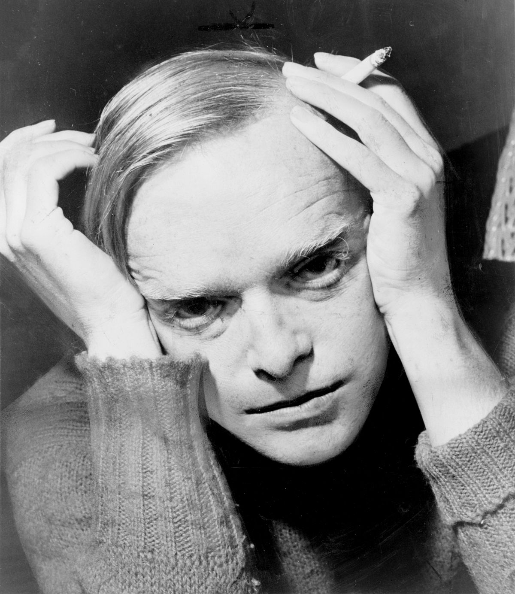

Truman Streckfus Persons 30 de septiembre de 1924 - 25 de agosto de 1984 fue un periodista y escritor estadounidense, principalmente conocido por la novela Breakfast at Tiffany's (Desayuno en Tiffany's) (1958) y su novela-documento In Cold Blood (A sangre fría) (1966).
Estudió en el Trinity School y en la St. John's Academy de Nueva York. A los 17 años consiguió un trabajo para la revista The New Yorker que consistía, según él, en «seleccionar tiras cómicas y recortar periódicos». Con 21 años abandona la revista y publica una serie de relatos: “Miriam”, “The headless hawk” y “Shut a final door”. Este último fue rechazado en Harper’s Bazaar y publicado en The Atlantic Monthly, lo que lo hizo acreedor al Premio O. Henry. La crítica lo aplaude sin reservas y lo considera un discípulo de Poe. En 1948, a los 23 años, publica su primera novela, Otras voces, otros ámbitos, una de las primeras en las que se plantea de forma abierta el tema de la homosexualidad.
En 1966 escribe A sangre fría que será su trabajo más celebrado. Con ella acuñaría el término non-fiction-novel, creando un referente para lo que luego sería el nuevo periodismo estadounidense. La novela, publicada tras 5 años de intensa investigación, cuenta el suceso real del asesinato de la familia Clutter, y es llevada al cine en 1967 por Richard Brooks. Del libro se venderían más de trescientos mil ejemplares, permaneciendo en la lista de los libros más vendidos del New York Times durante treinta y siete semanas.
Sus relaciones con el cine se extendieron además a la escritura de guiones, entre los que destaca el de ¡Suspense!, de Jack Clayton (1961). Incluso interpretó un papel en Un cadáver a los postres (Robert Moore, 1976).
En la década de 1950 reanudó su actividad periodística, realizando entrevistas para la revista Playboy. Capote murió en Bel Air, Los Ángeles, el 25 de agosto de 1984, a los 59 años de cáncer de hígado.